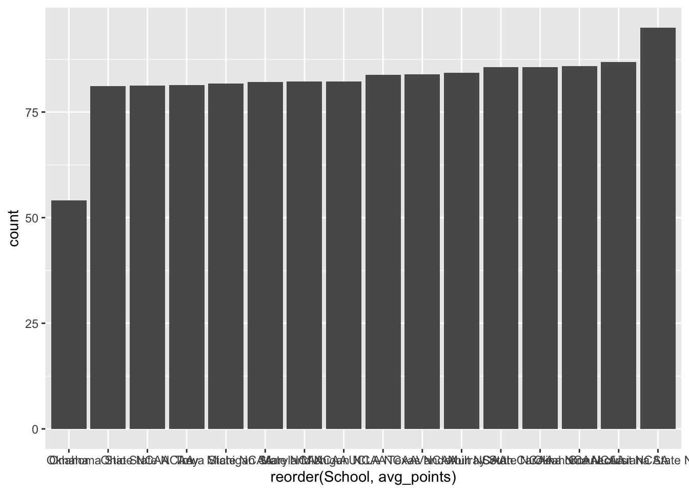
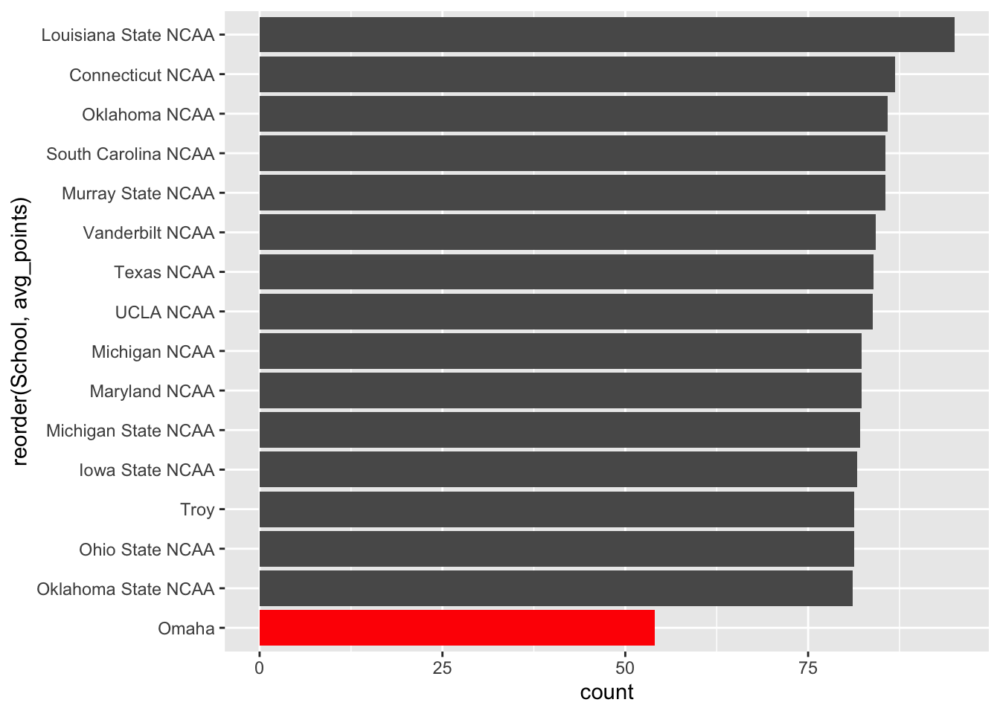
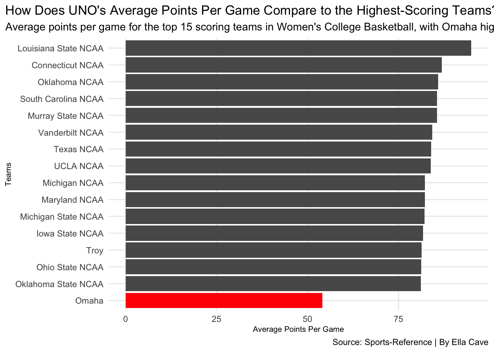
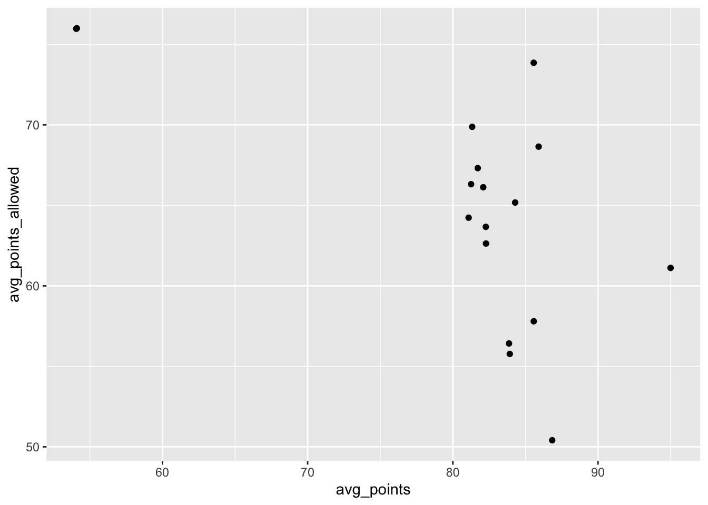
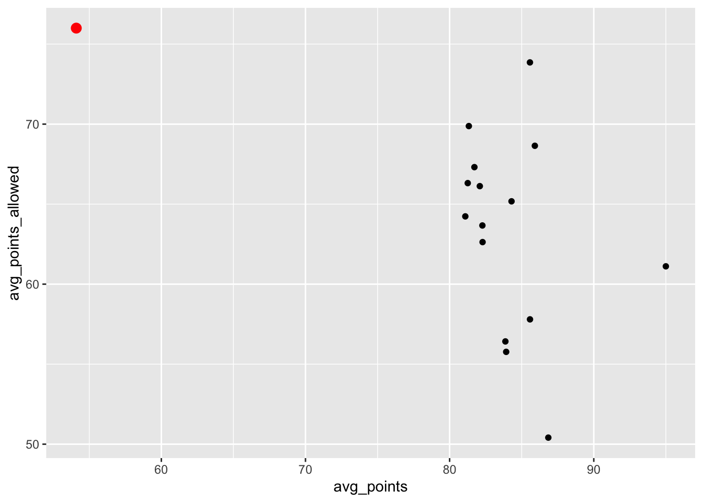
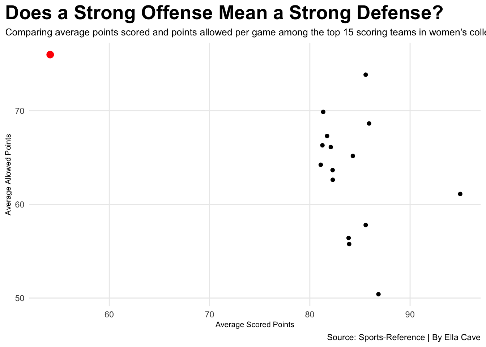
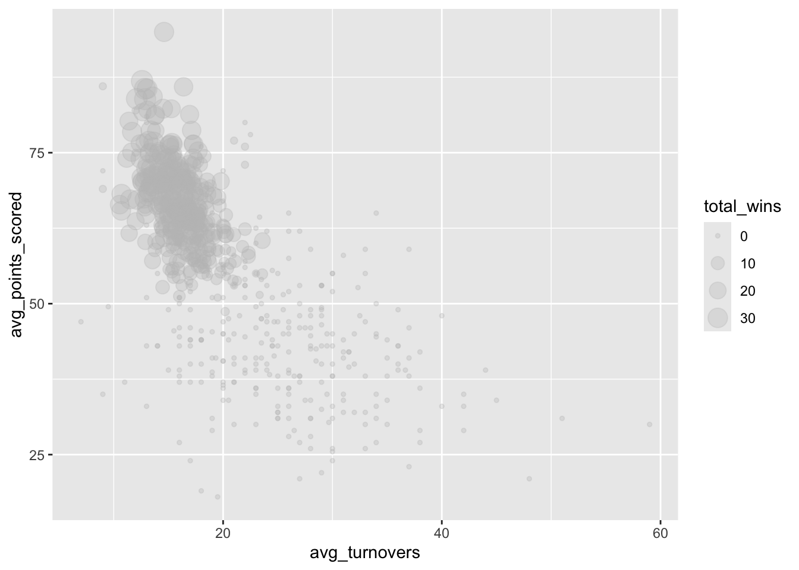
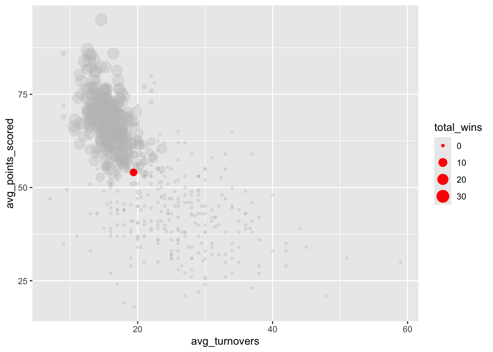
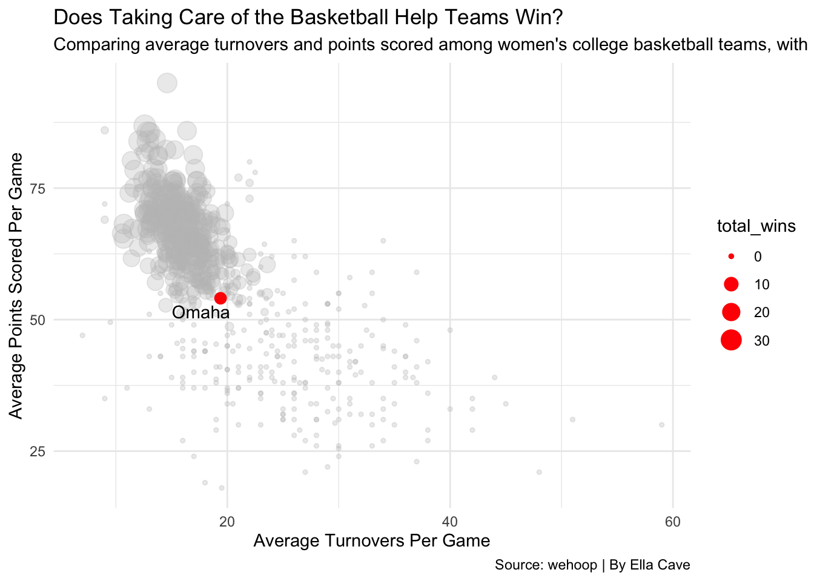

Code
library(tidyverse)
library(ggalt)Ella Cave
November 13, 2022
This is a story about Women’s College Basketball and how the University of Nebraska-Omaha compares to other college basketball teams.
Scoring points is one of the biggest ways teams win games, but it isn’t the only thing that contributes to a win. A team’s defense and ability to handle the basketball can also create a huge difference in a game. Now, in women’s college basketball, some teams score a lot more points on average than other teams, but does that mean they are more successful than other lower-scoring teams?
For this project, I wanted to look at women’s college basketball team stats from the 2025-26 season to see what stats might be related to the success of teams. I also want to look at the average points scored, the average points teams allow, and their turnover margin. Then connect that to how the University of Nebraska-Omaha women’s basketball team compares to others.
My first chart is a bar chart talking about the women’s college basketball teams with the highest average points and how UNO differs from them.
Rows: 363 Columns: 33
── Column specification ────────────────────────────────────────────────────────
Delimiter: ","
chr (1): School
dbl (32): Rk, Games, Overall_Wins, Overall_Losses, Overall_Win_pct, SRS, SOS...
ℹ Use `spec()` to retrieve the full column specification for this data.
ℹ Specify the column types or set `show_col_types = FALSE` to quiet this message.Rows: 363
Columns: 33
$ Rk <dbl> 1, 2, 3, 4, 5, 6, 7, 8, 9, 10, 11, 12, 13, 14, 15, 16,…
$ School <chr> "Abilene Christian", "Air Force", "Akron", "Alabama NC…
$ Games <dbl> 35, 35, 31, 35, 33, 32, 30, 31, 30, 30, 30, 35, 32, 37…
$ Overall_Wins <dbl> 24, 16, 7, 24, 22, 17, 14, 17, 7, 11, 12, 24, 12, 27, …
$ Overall_Losses <dbl> 11, 19, 24, 11, 11, 15, 16, 14, 23, 19, 18, 11, 20, 10…
$ Overall_Win_pct <dbl> 0.686, 0.457, 0.226, 0.686, 0.667, 0.531, 0.467, 0.548…
$ SRS <dbl> 2.97, -4.20, -12.78, 25.44, -7.38, -17.33, -4.60, -16.…
$ SOS <dbl> -3.59, -0.99, 0.05, 17.02, -9.41, -9.50, -5.22, -10.55…
$ Conf_Wins <dbl> 13, 7, 4, 7, 17, 12, 4, 14, 5, 4, 3, 9, 1, 14, 10, 14,…
$ Conf_Losses <dbl> 5, 13, 14, 9, 1, 6, 12, 4, 13, 14, 15, 9, 15, 4, 8, 4,…
$ Home_Wins <dbl> 15, 8, 5, 16, 13, 8, 9, 10, 4, 8, 12, 15, 9, 15, 8, 15…
$ Home_Losses <dbl> 2, 6, 10, 4, 1, 4, 5, 4, 10, 7, 8, 2, 9, 3, 3, 2, 7, 1…
$ Away_Wins <dbl> 8, 4, 1, 3, 7, 7, 5, 7, 3, 3, 0, 7, 1, 9, 12, 11, 3, 1…
$ Away_Losses <dbl> 5, 12, 13, 6, 6, 9, 11, 7, 13, 11, 9, 7, 10, 6, NA, 6,…
$ Tm_Points <dbl> 2505, 2108, 2156, 2450, 2038, 1934, 1728, 1783, 1671, …
$ Opp_Points <dbl> 2115, 2216, 2410, 2155, 1864, 2121, 1657, 1868, 1989, …
$ MP <dbl> 1405, 1405, 1265, 1400, 1324, 1286, 1220, 1244, 1210, …
$ FG <dbl> 888, 760, 752, 882, 702, 716, 646, 648, 598, 696, 775,…
$ FGA <dbl> 2084.000, 2118.000, 1854.000, 1998.000, 1778.000, 1848…
$ FG_pct <dbl> 0.426, 0.359, 0.406, 0.441, 0.395, 0.387, 0.432, 0.371…
$ `3P` <dbl> 276, 195, 236, 286, 123, 127, 174, 177, 185, 180, 127,…
$ `3PA` <dbl> 881.000, 702.000, 767.000, 785.000, 477.000, 483.000, …
$ `3P_pct` <dbl> 0.313, 0.278, 0.308, 0.364, 0.258, 0.263, 0.337, 0.298…
$ FT <dbl> 453, 393, 416, 400, 511, 375, 262, 310, 290, 307, 417,…
$ FTA <dbl> 593.000, 545.000, 596.000, 552.000, 765.000, 620.000, …
$ FT_pct <dbl> 0.764, 0.721, 0.698, 0.725, 0.668, 0.605, 0.688, 0.640…
$ ORB <dbl> 426, 420, 341, 354, 441, 464, 277, 359, 281, 311, 226,…
$ TRB <dbl> 1219, 1190, 1104, 1276, 1253, 1345, 952, 1099, 1028, 1…
$ AST <dbl> 497, 396, 382, 479, 353, 339, 400, 424, 350, 424, 441,…
$ STL <dbl> 385, 300, 201, 268, 312, 309, 183, 305, 167, 204, 288,…
$ BLK <dbl> 69, 76, 71, 161, 97, 84, 61, 77, 61, 63, 73, 99, 107, …
$ TOV <dbl> 528, 451, 584, 522, 632, 755, 453, 577, 451, 479, 492,…
$ PF <dbl> 561, 562, 666, 568, 567, 715, 439, 560, 371, 492, 621,…

ggplot() +
geom_bar(data=top_teams, aes(x=reorder(School, avg_points), weight=avg_points)) +
geom_bar(data=uno, aes(x=reorder(School, avg_points), weight=avg_points), fill="red") +
coord_flip() +
theme_minimal() +
labs(
x="Teams",
y="Average Points Per Game",
title="How Does UNO's Average Points Per Game Compare to the Highest-Scoring Teams?",
subtitle="Average points per game for the top 15 scoring teams in Women's College Basketball, with Omaha highlighted in red.",
caption="Source: Sports-Reference | By Ella Cave"
) +
theme(
axis.title = element_text(size=8),
panel.grid.minor = element_blank(),
plot.title.position = "plot"
)
If you look at the chart above, you can see that there’s a big difference between the top 15 scoring teams and UNO. The top teams are averaging 75 + points per game, and UNO is averaging a little more than 50. This chart shows that UNO scores a lot less per game than the top 15 teams. As I said before scoring does help team win games, but doesn’t mean they are successful all together. Before we think of everything all together, let’s look at a scatterplot comparing UNO’s average points scored and average points allowed. This will show whether they have strong defenses and offenses when they win.
Rows: 363
Columns: 34
$ Rk <dbl> 1, 2, 3, 4, 5, 6, 7, 8, 9, 10, 11, 12, 13, 14, 15, 16,…
$ School <chr> "Abilene Christian", "Air Force", "Akron", "Alabama NC…
$ Games <dbl> 35, 35, 31, 35, 33, 32, 30, 31, 30, 30, 30, 35, 32, 37…
$ Overall_Wins <dbl> 24, 16, 7, 24, 22, 17, 14, 17, 7, 11, 12, 24, 12, 27, …
$ Overall_Losses <dbl> 11, 19, 24, 11, 11, 15, 16, 14, 23, 19, 18, 11, 20, 10…
$ Overall_Win_pct <dbl> 0.686, 0.457, 0.226, 0.686, 0.667, 0.531, 0.467, 0.548…
$ SRS <dbl> 2.97, -4.20, -12.78, 25.44, -7.38, -17.33, -4.60, -16.…
$ SOS <dbl> -3.59, -0.99, 0.05, 17.02, -9.41, -9.50, -5.22, -10.55…
$ Conf_Wins <dbl> 13, 7, 4, 7, 17, 12, 4, 14, 5, 4, 3, 9, 1, 14, 10, 14,…
$ Conf_Losses <dbl> 5, 13, 14, 9, 1, 6, 12, 4, 13, 14, 15, 9, 15, 4, 8, 4,…
$ Home_Wins <dbl> 15, 8, 5, 16, 13, 8, 9, 10, 4, 8, 12, 15, 9, 15, 8, 15…
$ Home_Losses <dbl> 2, 6, 10, 4, 1, 4, 5, 4, 10, 7, 8, 2, 9, 3, 3, 2, 7, 1…
$ Away_Wins <dbl> 8, 4, 1, 3, 7, 7, 5, 7, 3, 3, 0, 7, 1, 9, 12, 11, 3, 1…
$ Away_Losses <dbl> 5, 12, 13, 6, 6, 9, 11, 7, 13, 11, 9, 7, 10, 6, NA, 6,…
$ Tm_Points <dbl> 2505, 2108, 2156, 2450, 2038, 1934, 1728, 1783, 1671, …
$ Opp_Points <dbl> 2115, 2216, 2410, 2155, 1864, 2121, 1657, 1868, 1989, …
$ MP <dbl> 1405, 1405, 1265, 1400, 1324, 1286, 1220, 1244, 1210, …
$ FG <dbl> 888, 760, 752, 882, 702, 716, 646, 648, 598, 696, 775,…
$ FGA <dbl> 2084.000, 2118.000, 1854.000, 1998.000, 1778.000, 1848…
$ FG_pct <dbl> 0.426, 0.359, 0.406, 0.441, 0.395, 0.387, 0.432, 0.371…
$ `3P` <dbl> 276, 195, 236, 286, 123, 127, 174, 177, 185, 180, 127,…
$ `3PA` <dbl> 881.000, 702.000, 767.000, 785.000, 477.000, 483.000, …
$ `3P_pct` <dbl> 0.313, 0.278, 0.308, 0.364, 0.258, 0.263, 0.337, 0.298…
$ FT <dbl> 453, 393, 416, 400, 511, 375, 262, 310, 290, 307, 417,…
$ FTA <dbl> 593.000, 545.000, 596.000, 552.000, 765.000, 620.000, …
$ FT_pct <dbl> 0.764, 0.721, 0.698, 0.725, 0.668, 0.605, 0.688, 0.640…
$ ORB <dbl> 426, 420, 341, 354, 441, 464, 277, 359, 281, 311, 226,…
$ TRB <dbl> 1219, 1190, 1104, 1276, 1253, 1345, 952, 1099, 1028, 1…
$ AST <dbl> 497, 396, 382, 479, 353, 339, 400, 424, 350, 424, 441,…
$ STL <dbl> 385, 300, 201, 268, 312, 309, 183, 305, 167, 204, 288,…
$ BLK <dbl> 69, 76, 71, 161, 97, 84, 61, 77, 61, 63, 73, 99, 107, …
$ TOV <dbl> 528, 451, 584, 522, 632, 755, 453, 577, 451, 479, 492,…
$ PF <dbl> 561, 562, 666, 568, 567, 715, 439, 560, 371, 492, 621,…
$ avg_points <dbl> 71.57143, 60.22857, 69.54839, 70.00000, 61.75758, 60.4…Rows: 14
Columns: 14
$ Rk <dbl> 1, 2, 3, 4, 5, 6, 7, 8, 9, 10, 11, 12, 13, 14
$ Season <chr> "2025-26", "2024-25", "2023-24", "2022-23", "2021-22…
$ Conf <chr> "Summit", "Summit", "Summit", "Summit", "Summit", "S…
$ Overall_W <dbl> 6, 14, 8, 15, 7, 7, 7, 8, 12, 16, 15, 10, 12, 17
$ Overall_L <dbl> 27, 17, 23, 17, 19, 13, 23, 21, 16, 15, 15, 18, 16, …
$ Overall_pct <dbl> 0.182, 0.452, 0.258, 0.469, 0.269, 0.350, 0.233, 0.2…
$ Conf_W <dbl> 3, 5, 3, 8, 3, 4, 2, 2, 3, 8, 7, 5, 4, 7
$ Conf_L <dbl> 13, 11, 13, 10, 14, 8, 14, 14, 11, 8, 9, 11, 10, 9
$ Conf_pct <dbl> 0.188, 0.313, 0.188, 0.444, 0.176, 0.333, 0.125, 0.1…
$ SRS <dbl> -25.38, -9.53, -13.41, -10.19, -7.08, -4.07, -11.83,…
$ SOS <dbl> -0.45, -0.08, -2.17, -2.66, 2.20, 2.74, 0.39, -2.22,…
$ points_scored_pg <dbl> 54.1, 67.7, 72.3, 66.1, 57.2, 61.9, 60.0, 59.8, 63.8…
$ points_allowed_pg <dbl> 76.0, 73.5, 81.2, 70.6, 65.0, 68.7, 69.0, 66.4, 72.8…
$ `Coach(es)` <chr> "Jamie Carey (6-27)", "Carrie Banks (14-17)", "Carri…

ggplot() +
geom_point(data=top_teams, aes(x=avg_points, y=avg_points_allowed)) +
geom_point(data=uno, aes(x=points_scored_pg, y=points_allowed_pg), color="red", size=3) +
labs(
x="Average Scored Points",
y="Average Allowed Points",
title="Does a Strong Offense Mean a Strong Defense?",
subtitle="Comparing average points scored and points allowed per game among the top 15 scoring teams in women's college basketball, with UNO highlighted in red.",
caption="Source: Sports-Reference | By Ella Cave"
) +
theme_minimal() +
theme(
plot.title = element_text(size = 20, face = "bold"),
axis.title = element_text(size = 8),
plot.subtitle = element_text(size = 10),
panel.grid.minor = element_blank(),
plot.title.position = "plot"
)
The scatterplot shows how the top 15 scoring teams and UNO compare in offense and defense through the points they allowed and points they scored. The top 15 teams on the right side show that they are scoring more and are letting their opponents fewer points. This shows that having a strong offense doesn’t always mean a team has the strongest defense.
As you can see, the red dot is UNO. UNO has scored a lot fewer points than the top 15 teams, and they have allowed more points to opponents. UNO doesn’t have the same outcome as the top-scoring teams in women’s college basketball, as you can tell by their lower scoring percentage. But I will say the points scored and points allowed are still not the only stats that can help a team be successful. One more stat I want to look at is the turnover margin for teams and how well a team can take care of the ball.
Rows: 12,058
Columns: 58
$ game_id <int> 401856590, 401856590, 401865139, 401…
$ season <int> 2026, 2026, 2026, 2026, 2026, 2026, …
$ season_type <int> 3, 3, 3, 3, 3, 3, 3, 3, 3, 3, 3, 3, …
$ game_date <date> 2026-04-05, 2026-04-05, 2026-04-04,…
$ game_date_time <dttm> 2026-04-05 15:30:00, 2026-04-05 15:…
$ team_id <int> 2579, 26, 2287, 276, 2579, 41, 251, …
$ team_uid <chr> "s:40~l:54~t:2579", "s:40~l:54~t:26"…
$ team_slug <chr> "south-carolina-gamecocks", "ucla-br…
$ team_location <chr> "South Carolina", "UCLA", "Illinois …
$ team_name <chr> "Gamecocks", "Bruins", "Redbirds", "…
$ team_abbreviation <chr> "SC", "UCLA", "ILST", "MRSH", "SC", …
$ team_display_name <chr> "South Carolina Gamecocks", "UCLA Br…
$ team_short_display_name <chr> "South Carolina", "UCLA", "Illinois …
$ team_color <chr> "73000a", "2774ae", "CE1126", "00b14…
$ team_alternate_color <chr> "000000", "f2a900", "ffe716", "00000…
$ team_logo <chr> "https://a.espncdn.com/i/teamlogos/n…
$ team_home_away <chr> "away", "home", "away", "home", "awa…
$ team_score <int> 51, 79, 41, 66, 62, 48, 44, 51, 81, …
$ team_winner <lgl> FALSE, TRUE, FALSE, TRUE, TRUE, FALS…
$ assists <int> 9, 23, 7, 15, 12, 15, 11, 13, 14, 8,…
$ blocks <int> 4, 5, 2, 8, 2, 3, 1, 6, 4, 8, 3, 3, …
$ defensive_rebounds <int> 20, 28, 21, 22, 33, 23, 19, 30, 34, …
$ fast_break_points <chr> "6", "11", "4", "16", "16", "9", "6"…
$ field_goal_pct <dbl> 29, 43, 29, 49, 38, 31, 31, 41, 37, …
$ field_goals_made <int> 18, 30, 14, 28, 21, 19, 20, 18, 24, …
$ field_goals_attempted <int> 62, 69, 48, 57, 56, 61, 65, 44, 65, …
$ fouls <int> 17, 17, 6, 11, 8, 17, 16, 12, 18, 26…
$ free_throw_pct <dbl> 76, 85, 83, 100, 82, 67, 40, 92, 71,…
$ free_throws_made <int> 13, 11, 10, 4, 18, 4, 2, 11, 25, 8, …
$ free_throws_attempted <int> 17, 13, 12, 4, 22, 6, 5, 12, 35, 15,…
$ largest_lead <chr> "0", "35", "3", "26", "15", "7", "2"…
$ offensive_rebounds <int> 17, 21, 12, 8, 14, 9, 17, 7, 20, 20,…
$ points_in_paint <chr> "28", "40", "18", "44", "34", "20", …
$ steals <int> 6, 7, 8, 15, 9, 10, 14, 5, 10, 21, 1…
$ team_turnovers <int> 1, 4, 1, 1, 2, 0, 1, 1, 0, 0, 3, 2, …
$ technical_fouls <int> 0, 0, 0, 0, 0, 0, 0, 0, 0, 0, 0, 0, …
$ three_point_field_goal_pct <dbl> 13, 42, 18, 27, 33, 29, 22, 31, 35, …
$ three_point_field_goals_made <int> 2, 8, 3, 6, 2, 6, 2, 4, 8, 4, 6, 8, …
$ three_point_field_goals_attempted <int> 15, 19, 17, 22, 6, 21, 9, 13, 23, 23…
$ total_rebounds <int> 37, 49, 33, 30, 47, 32, 36, 37, 54, …
$ total_technical_fouls <int> 0, 0, 0, 0, 0, 0, 0, 0, 0, 0, 0, 0, …
$ total_turnovers <int> 14, 13, 23, 13, 15, 10, 12, 23, 22, …
$ turnover_points <chr> "10", "19", "8", "17", "8", "18", "1…
$ turnovers <int> 14, 13, 23, 13, 15, 10, 12, 23, 22, …
$ opponent_team_id <int> 26, 2579, 276, 2287, 41, 2579, 26, 2…
$ opponent_team_uid <chr> "s:40~l:54~t:26", "s:40~l:54~t:2579"…
$ opponent_team_slug <chr> "ucla-bruins", "south-carolina-gamec…
$ opponent_team_location <chr> "UCLA", "South Carolina", "Marshall"…
$ opponent_team_name <chr> "Bruins", "Gamecocks", "Thundering H…
$ opponent_team_abbreviation <chr> "UCLA", "SC", "MRSH", "ILST", "CONN"…
$ opponent_team_display_name <chr> "UCLA Bruins", "South Carolina Gamec…
$ opponent_team_short_display_name <chr> "UCLA", "South Carolina", "Marshall"…
$ opponent_team_color <chr> "2774ae", "73000a", "00b140", "CE112…
$ opponent_team_alternate_color <chr> "f2a900", "000000", "000000", "ffe71…
$ opponent_team_logo <chr> "https://a.espncdn.com/i/teamlogos/n…
$ opponent_team_score <int> 79, 51, 66, 41, 48, 62, 51, 44, 64, …
$ lead_changes <chr> "0", "0", "1", "1", "4", "4", "1", "…
$ lead_percentage <chr> "0", "98", "5", "95", "63", "25", "2…

ggplot() +
geom_point(
data=turnovers,
aes(x=avg_turnovers, y=avg_points_scored, size=total_wins),
color="grey",
alpha=.3) +
geom_point(
data=uno,
aes(x=avg_turnovers, y=avg_points_scored, size=total_wins),
color="red") +
geom_text_repel(
data=uno,
aes(x=avg_turnovers, y=avg_points_scored, label=team_location)
) +
labs(
x="Average Turnovers Per Game",
y="Average Points Scored Per Game",
title="Does Taking Care of the Basketball Help Teams Win?",
subtitle="Comparing average turnovers and points scored among women's college basketball teams, with Omaha highlighted in red.",
caption="Source: wehoop | By Ella Cave"
) +
theme_minimal()
The chart shows that teams with fewer turnovers and higher scoring averages have more wins. UNO is highlighted and looks to be a little below average compared to the rest of the teams. Although UNO isn’t turning the ball over that much, they still have a lower scoring average. This shows that taking care of the ball does help teams win.
After looking at the bar chart, scatterplot, and bubble chart, I think that there is more than one specific thing that makes a successful college basketball team. Now, scoring points, having a strong defense, and limiting turnovers can really make a difference in being a successful team. Overall, for teams that can succeed in all three things and turn those good stats into actual wins can have a better chance at being successful.